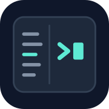

Configure agents. Run and inspect their work.
Connect models, tools, and skills, then run agents through chat, APIs, messaging, or automation. Manage access, tool approvals, traces, and daily or monthly spending limits.
Agent platforms · Developer tools · Reliable operations
Build and operate AI agents with memory, knowledge, and isolated workspaces. Keep everyday work moving with monitoring, terminal, and launcher tools.
Dedicated services for agent orchestration, durable context, grounded knowledge, and isolated execution. Deploy them in your own environment and connect the services you need.
Configure agents. Run and inspect their work.
Connect models, tools, and skills, then run agents through chat, APIs, messaging, or automation. Manage access, tool approvals, traces, and daily or monthly spending limits.
Carry useful context across agents and sessions.
Store rules, preferences, decisions, facts, and lessons with their sources. Recall them across coding clients, control who can access them, and hand work from one session to another.

Give agents knowledge they can trace to a source.
Collect documents and recordings, produce transcripts and meeting notes, and retrieve evidence from accessible source material. Keep knowledge graphs connected to the documents behind them.
Give agent work a place to run.
Run commands and coding agents in isolated sandboxes while retaining their workspaces and sessions. Inspect logs, pause and resume work, and manage Git changes through the console or API.
Monitor your systems, keep coding sessions running, and make everyday actions easier.
Monitor your agents, accounts, and infrastructure.
Follow coding-agent activity alongside usage from multiple accounts and metrics from servers, Kubernetes clusters, DGX Spark hosts, and custom resources. View recent trends on desktop or web, with a character companion and an optional ESP32 display.

Close the terminal. The shells keep running.
Keep coding agents running on an always-on machine after you close the terminal or disconnect SSH. Reconnect to the same workspace, review retained output, and see which agents are working or waiting for input.

A launcher you summon with one shortcut.
A global hotkey opens your own pages of buttons. Run commands, open files and URLs, execute scripts, chain actions, or launch applications — and keep the whole setup in step across devices.
Backend development and SRE experience guide how we build, ship, and operate agent systems.